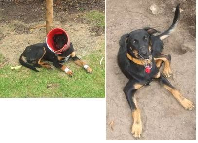
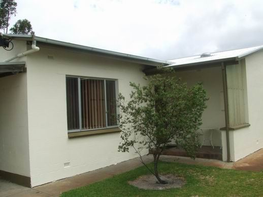

Tarpeena Tales 22
Life is like a black dog.
Black dog you may ask but that is what we have, two black dogs, and I was walking in the Pines with them when they discovered that butterflies were fun to chase and even catch, infrequently.
So I was musing that we are butterflies, sitting comfortably on the grass trying to attract a mate when along comes a black dog to bite you on your bum. If you are quick enough and not distracted enough then you escape and life goes on, but somewhat disturbed perhaps. But if you are nice and comfortable and happy then the black dog bites you.
I was nice and comfortable in my retirement then along comes the need for an ensuite and life is frantic again. Bloody dog.
Then Centrelink appoint a new network member and they tell me to ring up people who have no intention of employing me, asking for a job, wasting my time and theirs. Bloody dog.
Anyway now I have opted for voluntary work at the school next door and it turns out a couple of mornings having the kids read to me is all that is required. Now I like that idea so perhaps this butterfly has won by leaping from the black dogs jaws.
Not that I am a butterfly more of a bat. John reckons I don't have dress sense so a bat is probably a better metaphor. I know John thinks that because when I mentioned that I should buy a new set of glasses with those nice square frames he said they wouldn't look too good with your blue bike shorts and pink shirt so why would you bother!
But I wasn't worried because both of them are comfortable to wear and that makes more sense than looking smart and he had a point. You can't make a silk purse out of a sows ear as Mum used to say. But I thought they would look fine in the next wedding photo, whenever that is.
Talking about dogs, the dogs have caused a lot of trouble since they arrived. They ripped the fly screens off of the games room window which opens out onto the back garden and shredded Nuran's nice new curtains. I fixed that by putting cocky wire over the windows. So they took to the plastic pots in vengeance. I didn't mind that as it means less pot plants to water. But it seems the taste of plastic was good for a dog so they chewed the trailer plug off and the nibbled the wire back to the lights. That's ok as the trailer is a wreck and I took it to the dump with the last load of rubbish and left it there! More space in the yard for them to dig holes in now.
We got the dogs desexed and Banjo's dew claws taken off. So the dogs pulled the stitches out of his dew claws and I cant take him for a walk now. We made them wear buckets on their heads and still they managed to pull stitches out so Buddha wears a muzzle and still manages to pull away at stitches on Banjos legs and now they are separated in different yards. I can take Buddha for a walk but he is very subdued without Banjo. Still at least the butterflies are undisturbed now and so are the stitches. What we did find is that if they wear the buckets then they spend a lot of time trying to get them off and don't wreck anything else. Handy control tool. 



My new gutter leaked and collected water in the middle instead of running off. Doesn't pay to do a quick job sometimes. Bloody dog.
So I took it down and turned the fall the other way so we could collect the rainwater instead of it going onto the road and fixed the leak. The black dog missed me and its all for the better. Sometimes its better to be disturbed
But I wouldn't mind if my life returned to it's nice and easy equilibrium now and the black dog can go find someone else to annoy.
30.01.07